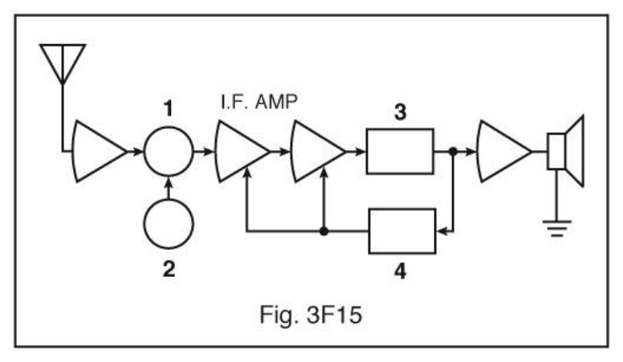
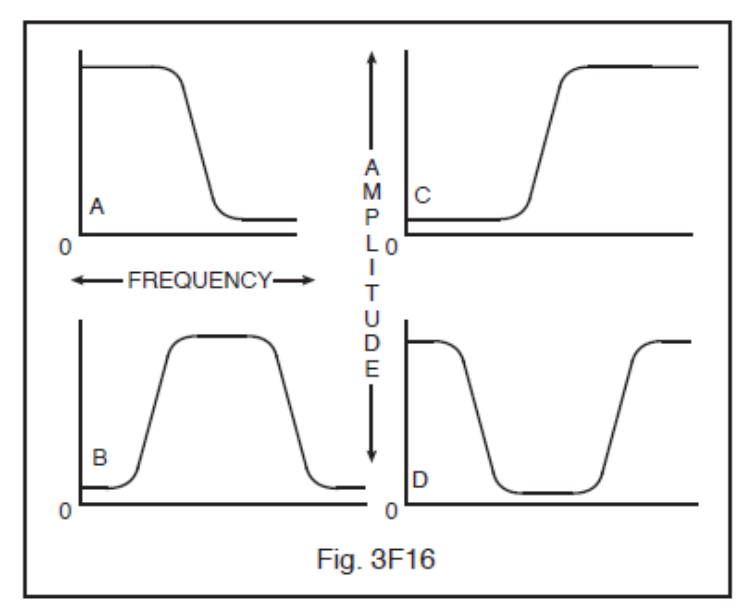

All 60 FCC GROL questions for 3F Receivers with the correct answers marked, from the official current FCC question pool. Test yourself with the free practice exam.
3-41F1
What is the limiting condition for sensitivity in a communications receiver?
A. The noise floor of the receiver. ✓
B. The power supply output ripple.
C. The two-tone intermodulation distortion.
D. The input impedance to the detector.
3-41F2
What is the definition of the term “receiver desensitizing”?
A. A burst of noise when the squelch is set too low.
B. A reduction in receiver sensitivity because of a strong signal on a nearby frequency. ✓
C. A burst of noise when the squelch is set too high.
D. A reduction in receiver sensitivity when the AF gain control is turned down.
3-41F3
What is the term used to refer to a reduction in receiver sensitivity caused by unwanted high-level adjacent channel signals?
A. Desensitizing. ✓
B. Intermodulation distortion.
C. Quieting.
D. Overloading.
3-41F4
What is meant by the term noise figure of a communications receiver?
A. The level of noise entering the receiver from the antenna.
B. The relative strength of a received signal 3 kHz removed from the carrier frequency.
C. The level of noise generated in the front end and succeeding stages of a receiver. ✓
D. The ability of a receiver to reject unwanted signals at frequencies close to the desired one.
3-41F5
Which stage of a receiver primarily establishes its noise figure?
A. The audio stage.
B. The RF stage. ✓
C. The IF strip.
D. The local oscillator.
3-41F6
What is the term for the ratio between the largest tolerable receiver input signal and the minimum discernible signal?
A. Intermodulation distortion.
B. Noise floor.
C. Noise figure.
D. Dynamic range. ✓
3-42F1
How can selectivity be achieved in the front-end circuitry of a communications receiver?
A. By using an audio filter.
B. By using an additional RF amplifier stage.
C. By using an additional IF amplifier stage.
D. By using a preselector. ✓
3-42F2
What is the primary purpose of an RF amplifier in a receiver?
A. To provide most of the receiver gain.
B. To vary the receiver image rejection by utilizing the AGC.
C. To improve the receiver’s noise figure. ✓
D. To develop the AGC voltage.
3-42F3
How much gain should be used in the RF amplifier stage of a receiver?
A. Sufficient gain to allow weak signals to overcome noise generated in the first mixer stage. ✓
B. As much gain as possible short of self oscillation.
C. Sufficient gain to keep weak signals below the noise of the first mixer stage.
D. It depends on the amplification factor of the first IF stage.
3-42F4
Too much gain in a VHF receiver front end could result in this:
A. Local signals become weaker.
B. Difficult to match receiver impedances.
C. Dramatic increase in receiver current.
D. Susceptibility of intermodulation interference from nearby transmitters. ✓
3-42F5
What is the advantage of a GaAsFET preamplifier in a modern VHF radio receiver?
A. Increased selectivity and flat gain.
B. Low gain but high selectivity.
C. High gain and low noise floor. ✓
D. High gain with high noise floor.
3-42F6
In what stage of a VHF receiver would a low noise amplifier be most advantageous?
A. IF stage.
B. Front end RF stage. ✓
C. Audio stage.
D. Power supply.
3-43F1
Why is the Colpitts oscillator circuit commonly used in a VFO (variable frequency oscillator)?
A. It can be phase locked.
B. It can be remotely tuned.
C. It is stable. ✓
D. It has little or no effect on the crystal’s stability.
3-43F2
What is the oscillator stage called in a frequency synthesizer?
A. VCO. ✓
B. Divider.
C. Phase detector.
D. Reference standard.
3-43F3
What are three major oscillator circuits found in radio equipment?
A. Taft, Pierce, and negative feedback.
B. Colpitts, Hartley, and Taft.
C. Taft, Hartley, and Pierce.
D. Colpitts, Hartley, and Pierce. ✓
3-43F4
Which type of oscillator circuit is commonly used in a VFO (variable frequency oscillator)?
A. Colpitts. ✓
B. Pierce.
C. Hartley.
D. Negative feedback.
3-43F5
What condition must exist for a circuit to oscillate? It must:
A. Have a gain of less than 1.
B. Be neutralized.
C. Have sufficient negative feedback.
D. Have sufficient positive feedback. ✓
3-43F6
In Figure 3F15, which block diagram symbol (labeled 1 through 4) is used to represent a local oscillator?

A. 1
B. 2 ✓
C. 3
D. 4
3-44F1
What is the image frequency if the normal channel is 151.000 MHz, the IF is operating at 11.000 MHz, and the LO is at 140.000 MHz?
A. 131.000 MHz.
B. 129.000 MHz. ✓
C. 162.000 MHz.
D. 150.000 MHz.
3-44F2
What is the mixing process in a radio receiver?
A. The elimination of noise in a wideband receiver by phase comparison.
B. The elimination of noise in a wideband receiver by phase differentiation.
C. Distortion caused by auroral propagation.
D. The combination of two signals to produce sum and difference frequencies. ✓
3-44F3
In what radio stage is the image frequency normally rejected?
A. RF. ✓
B. IF.
C. LO.
D. Detector.
3-44F4
What are the principal frequencies that appear at the output of a mixer circuit?
A. Two and four times the original frequency.
B. The sum, difference and square root of the input frequencies.
C. The original frequencies and the sum and difference frequencies. ✓
D. 1.414 and 0.707 times the input frequency.
3-44F5
If a receiver mixes a 13.8 MHz VFO with a 14.255 MHz receive signal to produce a 455 kHz intermediate frequency signal, what type of interference will a 13.345 MHz signal produce in the receiver?
A. Local oscillator interference.
B. An image response. ✓
C. Mixer interference.
D. Intermediate frequency interference.
3-44F6
What might occur in a receiver if excessive amounts of signal energy overdrive the mixer circuit?
A. Automatic limiting occurs.
B. Mixer blanking occurs.
C. Spurious mixer products are generated. ✓
D. The mixer circuit becomes unstable and drifts.
3-45F1
What degree of selectivity is desirable in the IF circuitry of a wideband FM phone receiver?
A. 1 kHz.
B. 2.4 kHz.
C. 4.2 kHz.
D. 15 kHz. ✓
3-45F2
Which one of these filters can be used in micro-miniature electronic circuits?
A. High power transmitter cavity.
B. Receiver SAW IF filter. ✓
C. Floppy disk controller.
D. Internet DSL to telephone line filter.
3-45F3
A receiver selectivity of 2.4 kHz in the IF circuitry is optimum for what type of signals?
A. CW.
B. Double-sideband AM voice.
C. SSB voice. ✓
D. FSK RTTY.
3-45F4
A receiver selectivity of 10 KHz in the IF circuitry is optimum for what type of signals?
A. Double-sideband AM. ✓
B. SSB voice.
C. CW.
D. FSK RTTY.
3-45F5
What is an undesirable effect of using too wide a filter bandwidth in the IF section of a receiver?
A. Output-offset overshoot.
B. Undesired signals will reach the audio stage. ✓
C. Thermal-noise distortion.
D. Filter ringing.
3-45F6
How should the filter bandwidth of a receiver IF section compare with the bandwidth of a received signal?
A. Slightly greater than the received-signal bandwidth. ✓
B. Approximately half the received-signal bandwidth.
C. Approximately two times the received-signal bandwidth.
D. Approximately four times the received-signal bandwidth.
3-46F1
What is the primary purpose of the final IF amplifier stage in a receiver?
A. Dynamic response.
B. Gain. ✓
C. Noise figure performance.
D. Bypass undesired signals.
3-46F2
What factors should be considered when selecting an intermediate frequency?
A. Cross-modulation distortion and interference.
B. Interference to other services.
C. Image rejection and selectivity. ✓
D. Noise figure and distortion.
3-46F3
What is the primary purpose of the first IF amplifier stage in a receiver?
A. Noise figure performance.
B. Tune out cross-modulation distortion.
C. Dynamic response.
D. Selectivity. ✓
3-46F4
What parameter must be selected when designing an audio filter using an op-amp?
A. Bandpass characteristics. ✓
B. Desired current gain.
C. Temperature coefficient.
D. Output-offset overshoot.
3-46F5
What are the distinguishing features of a Chebyshev filter?
A. It has a maximally flat response over its passband.
B. It only requires inductors.
C. It allows ripple in the passband. ✓
D. A filter whose product of the series- and shunt-element impedances is a constant for all frequencies.
3-46F6
When would it be more desirable to use an m-derived filter over a constant-k filter?
A. When the response must be maximally flat at one frequency.
B. When the number of components must be minimized.
C. When high power levels must be filtered.
D. When you need more attenuation at a certain frequency that is too close to the cut-off frequency for a constant-k filter. ✓
3-47F1
A good crystal band-pass filter for a single-sideband phone would be?
A. 5 KHz.
B. 2.1 KHz. ✓
C. 500 Hz.
D. 15 KHz.
3-47F2
Which statement is true regarding the filter output characteristics shown in Figure 3F16?

A. C is a low pass curve and B is a band pass curve.
B. B is a high pass curve and D is a low pass curve.
C. A is a high pass curve and B is a low pass curve.
D. A is a low pass curve and D is a band stop curve. ✓
3-47F3
What are the three general groupings of filters?
A. High-pass, low-pass and band-pass. ✓
B. Inductive, capacitive and resistive.
C. Audio, radio and capacitive.
D. Hartley, Colpitts and Pierce.
3-47F4
What is an m-derived filter?
A. A filter whose input impedance varies widely over the design bandwidth.
B. A filter whose product of the series- and shunt-element impedances is a constant for all frequencies.
C. A filter whose schematic shape is the letter “M”.
D. A filter that uses a trap to attenuate undesired frequencies too near cutoff for a constant-k filter. ✓
3-47F5
What is an advantage of a constant-k filter?
A. It has high attenuation of signals at frequencies far removed from the pass band. ✓
B. It can match impedances over a wide range of frequencies.
C. It uses elliptic functions.
D. The ratio of the cutoff frequency to the trap frequency can be varied.
3-47F6
What are the distinguishing features of a Butterworth filter?
A. A filter whose product of the series- and shunt-element impedances is a constant for all frequencies.
B. It only requires capacitors.
C. It has a maximally flat response over its passband. ✓
D. It requires only inductors.
3-48F1
What is a product detector?
A. It provides local oscillations for input to the mixer.
B. It amplifies and narrows the band-pass frequencies.
C. It uses a mixing process with a locally generated carrier. ✓
D. It is used to detect cross-modulation products.
3-48F2
Which circuit is used to detect FM-phone signals?
A. Balanced modulator.
B. Frequency discriminator. ✓
C. Product detector.
D. Phase splitter.
3-48F3
What is the process of detection in a radio diode detector circuit?
A. Breakdown of the Zener voltage.
B. Mixing with noise in the transition region of the diode.
C. Rectification and filtering of RF. ✓
D. The change of reactance in the diode with respect to frequency.
3-48F4
What is a frequency discriminator in a radio receiver?
A. A circuit for detecting FM signals. ✓
B. A circuit for filtering two closely adjacent signals.
C. An automatic band switching circuit.
D. An FM generator.
3-48F5
In a CTCSS controlled FM receiver, the CTCSS tone is filtered out after the:
A. IF stage but before the mixer.
B. Mixer but before the IF.
C. IF but before the discriminator.
D. Discriminator but before the audio section. ✓
3-48F6
What is the definition of detection in a radio receiver?
A. The process of masking out the intelligence on a received carrier to make an S-meter operational.
B. The recovery of intelligence from the modulated RF signal. ✓
C. The modulation of a carrier.
D. The mixing of noise with the received signal.
3-49F1
What is the digital signal processing term for noise subtraction circuitry?
A. Adaptive filtering and autocorrelation. ✓
B. Noise blanking.
C. Noise limiting.
D. Auto squelch noise reduction.
3-49F2
What is the purpose of de-emphasis in the receiver audio stage?
A. When coupled with the transmitter pre-emphasis, flat audio is achieved.
B. When coupled with the transmitter pre-emphasis, flat audio and noise reduction is received. ✓
C. No purpose is achieved.
D. To conserve bandwidth by squelching no-audio periods in the transmission.
3-49F3
What makes a Digital Coded Squelch work?
A. Noise.
B. Tones.
C. Absence of noise.
D. Digital codes. ✓
3-49F4
What causes a squelch circuit to function?
A. Presence of noise. ✓
B. Absence of noise.
C. Received tones.
D. Received digital codes.
3-49F5
What makes a CTCSS squelch work?
A. Noise.
B. Tones. ✓
C. Absence of noise.
D. Digital codes.
3-49F6
What radio circuit samples analog signals, records and processes them as numbers, then converts them back to analog signals?
A. The pre-emphasis audio stage.
B. The squelch gate circuit.
C. The digital signal processing circuit. ✓
D. The voltage controlled oscillator circuit.
3-50F1
Where would you normally find a low-pass filter in a radio receiver?
A. In the AVC circuit.
B. In the Oscillator stage.
C. In the Power Supply.
D. A and C, but not B. ✓
3-50F2
How can ferrite beads be used to suppress ignition noise? Install them:
A. In the resistive high voltage cable every 2 years.
B. Between the starter solenoid and the starter motor.
C. Install them in the primary and secondary ignition leads. ✓
D. In the antenna lead.
3-50F3
What is the term used to refer to the condition where the signals from a very strong station are superimposed on other signals being received?
A. Intermodulation distortion.
B. Cross-modulation interference. ✓
C. Receiver quieting.
D. Capture effect.
3-50F4
What is cross-modulation interference?
A. Interference between two transmitters of different modulation type.
B. Interference caused by audio rectification in the receiver preamp.
C. Modulation from an unwanted signal heard in addition to the desired signal. ✓
D. Harmonic distortion of the transmitted signal.
3-50F5
In Figure 3F15 at what point in the circuit (labeled 1 through 4) could a DC voltmeter be used to monitor signal strength?
A. 1
B. 2
C. 3
D. 4 ✓
3-50F6
Pulse type interference to automobile radio receivers that appears related to the speed of the engine can often be reduced by:
A. Installing resistances in series with spark plug wires. ✓
B. Using heavy conductors between the starting battery and the starting motor.
C. Connecting resistances in series with the battery.
D. Grounding the negative side of the battery.